来源：https://uh4tzunhi6.feishu.cn/docx/NlN7d1NWdomGubxhHcNc2jEpnje
这绝对是全网最炸裂的“偷懒工具库”没有之一。全都是我自己一路摸索，总结得出的，也是我一直在用的。我敢说，有了这些工具的帮助，你绝对可以弯道超车一众同行，效率直接提高50倍！
拿小红书举例吧，我给你们说几个它厉害的功能，其他软件同理。
在文档的最后最后，我会分享这次提到的所有工具的链接，不着急，先听我慢慢道来。
步骤：下载好软件之后，看完教程视频，就可以上手实操了。
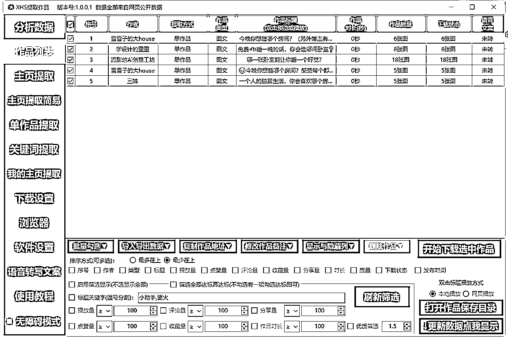
进去之后，是这么一个页面。按照教程里的，我们在【浏览器】选项，我们登录XHS账号后，就可以开始随心所欲了。看上谁，就“捉拿”谁，就提取谁的作品。
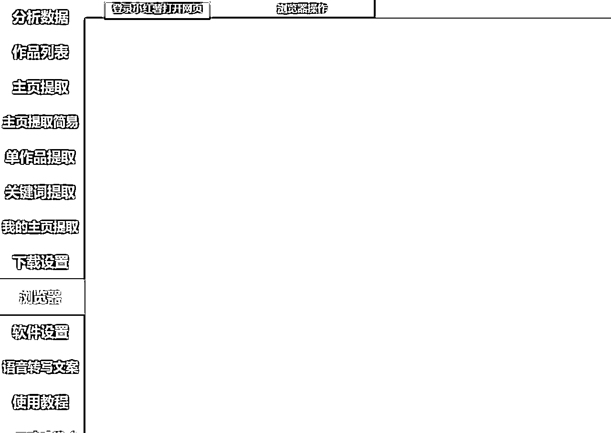
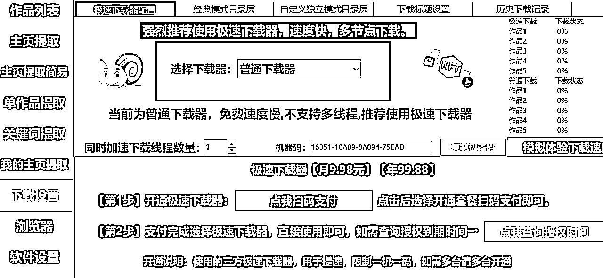
注意，下载设置这里，一定要选择【普通下载器】。PS:普通的就够了，下载速度就很快，完全没必要付费昂。
功能浅显易懂，我常用的几个有【主页提取】【单作品提取】【关键词提取】，少部分情况用【我的主页提取】，那么下面的内容，我就围绕这四个板块讲解，如果你用过这个软件，可以自行跳过了。
复制你想要提取的作者的XHS链接，到输入栏，然后点击【开始添加主页】，就可以提取这个作者的作品了，我最多的时候，同时提取过10个作者的链接，一下读取了上千个视频，完全是不用我们手动的，机器是自动抓取的。内心爆爽！可以解脱手上的活了！
那有的人就会觉得，我疯了？上千个作品，我看的过来吗？别急！我是设置了筛选条件的，后面会讲！
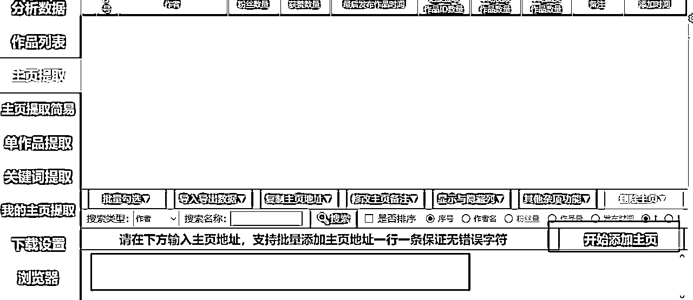
顾名思义：提取某个，或者某几个，想要提取的视频。后面可以设置，提取多少个作品，为了防止频繁，还是要让机器休息会儿，每次提取10个作品，休息30S刚刚好。
看我下面的案例，我就是一次提取，5个视频。下载好的视频都在作品列表。
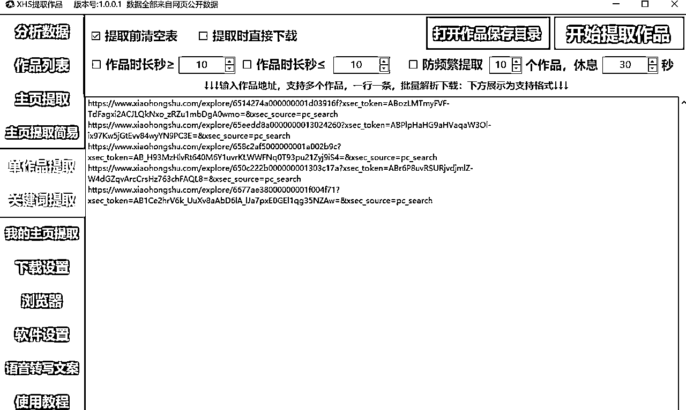
根据关键词去搜索视频，那我们比如想要找治愈类视频的素材，就可以输入相关的关键词。比如治愈视频之类，再点击【开始提取关键词】，就可以开始搜索了。他就会自动在小红书全网搜索。
你还可以给它限定条件，比如【发布开始时间】【发布截止时间】，是不是很Nice？
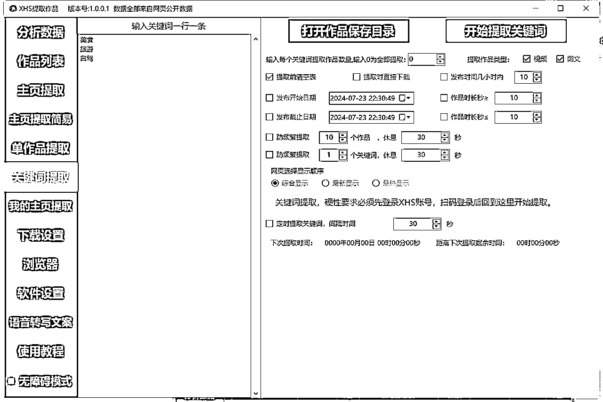
前面，不管是主页提取，还是其他提取方式，提取出来的作品，都在【作品列表】这一栏，如果没有筛选条件的，直接点击【开始下载作品】就可以了。
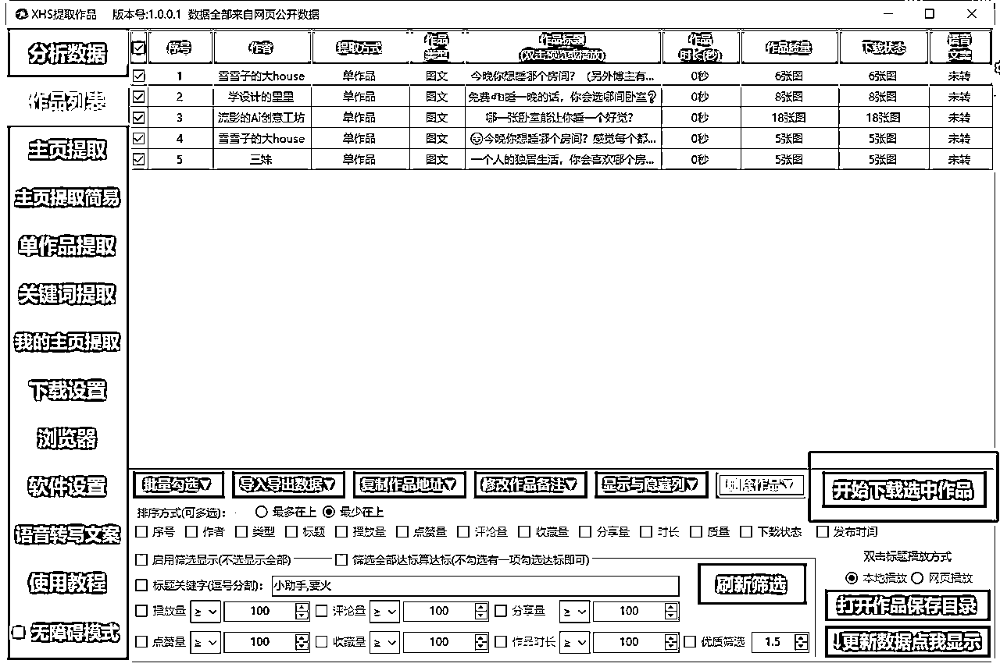
比如我的筛选条件是【万赞以上】，那我就在点赞量那一栏输入【10000】，顺便点击【启用筛选显示】，那么这个时候，我提取出来的5个作品，就只剩下一个了。所以，我前面提取出来的上千个作品，可能一经筛选，就只剩下几百个了。
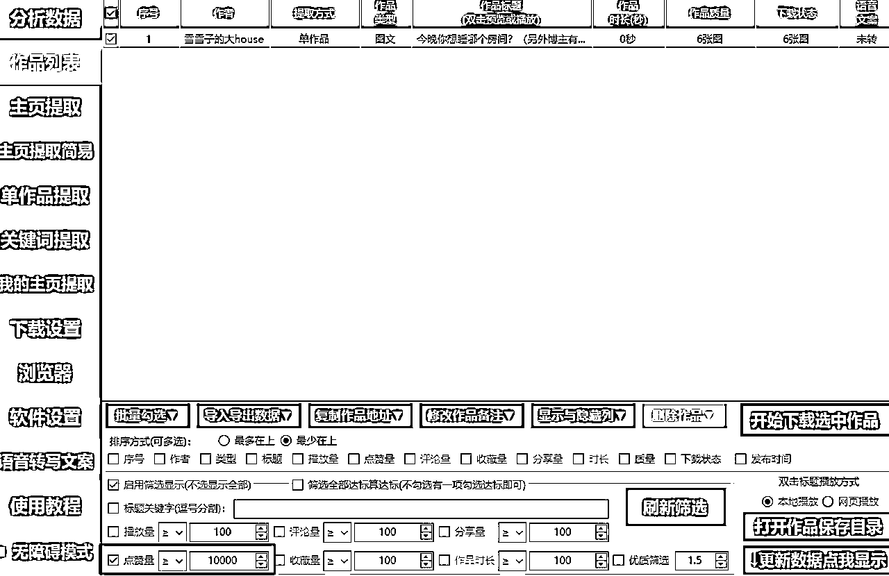
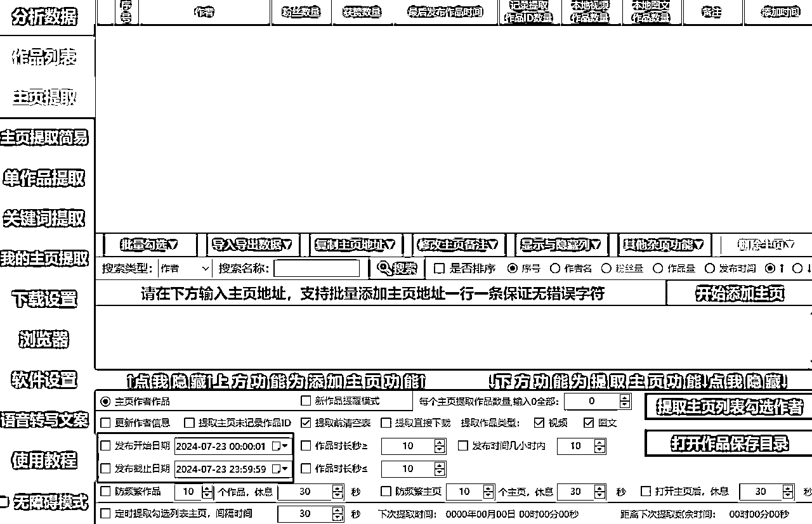
很简单，在【主页提取】那一栏，添加完作者主页后，选择【发布开始日期】和【发布截止日期】，就好了，然后再去提取视频。
是不是看到这里，觉得自己以前一个个提取作品，可太低效了？还有哈，下一个就是批量提取短视频文案了，也免费！
神器就是-通义千问
https://tongyi.aliyun.com/qianwen/ 需要注册登录哦，不需要出海，国内良心网站。
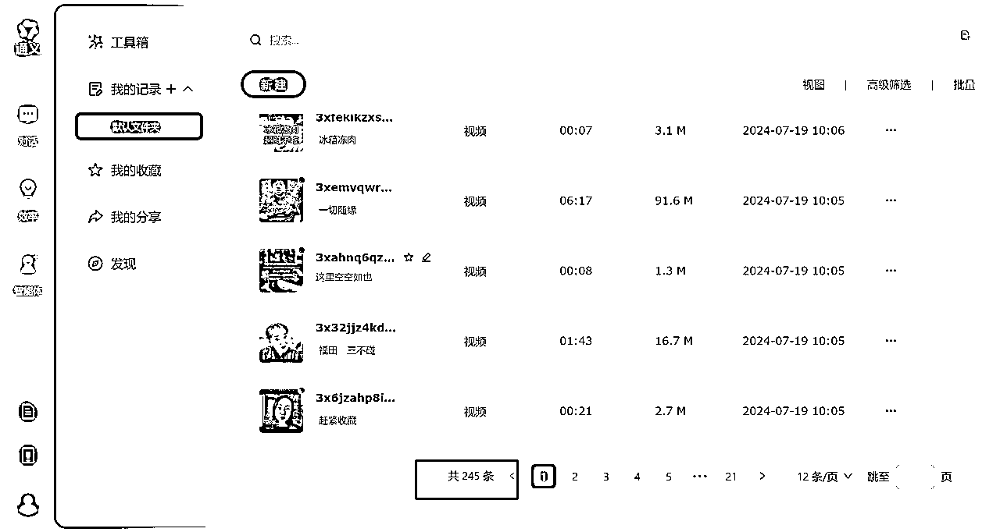
看到没，我已经提取了245条文案了。我上个公司的老板，让我在一周内搞100条大健康文案，我3天就给他搞完了，全靠江湖，和这个神器。不然真的牛马了，累死。
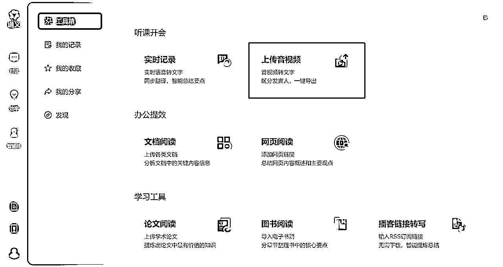
这里面的【上传音视频】就是我今天要讲的重头戏。
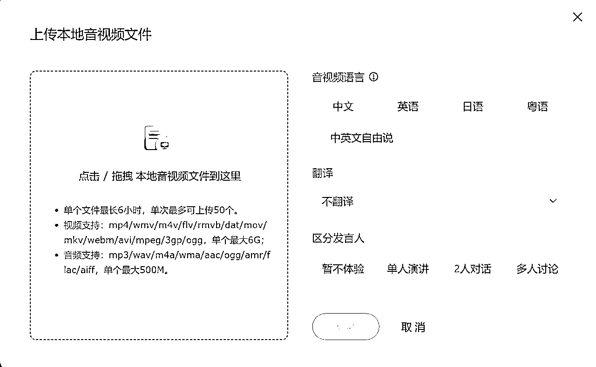
单次最多可以上传50个作品，单个文件最长6小时，那么你们，其实可以提前把你们要提取的视频，存放在一个电脑文件夹里，一起拖进去，完事儿！
等解析就好了！
解析好的文稿都在 效率-我的记录-默认文件夹-新建里面
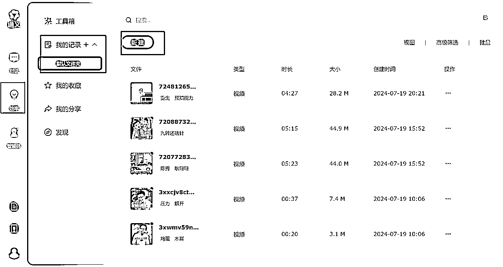
PS:点击右边的批量，勾选，需要的视频文稿就可以了。一次性最多可以导出12个，也就是一页的量。
对于要求高，有其他需求的同学哈，还可以在导入通义之前，先修改好视频的文件名，导入进去，一个个名字就是非常清晰的。
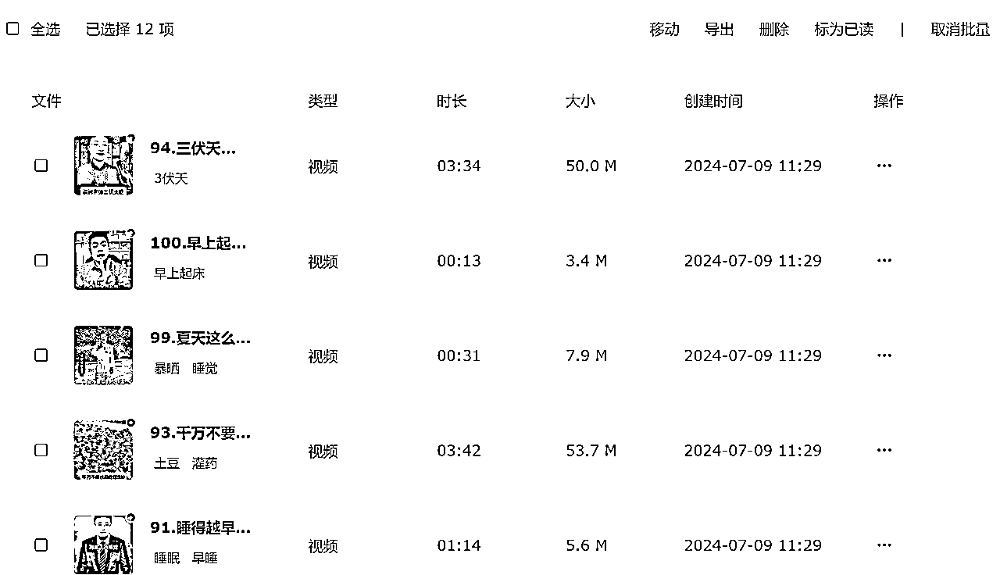
不然你们想，我100篇，我脑壳不得爆炸啊。
下载的时候，把【发言人】【时间戳】，给×了，不然你下载的话，还得去删除这几个字。
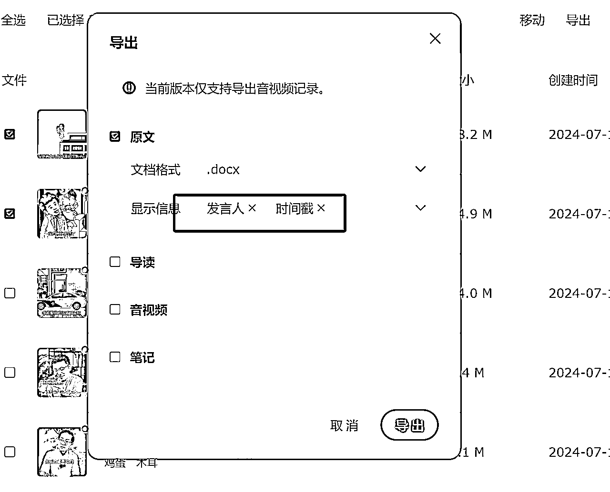
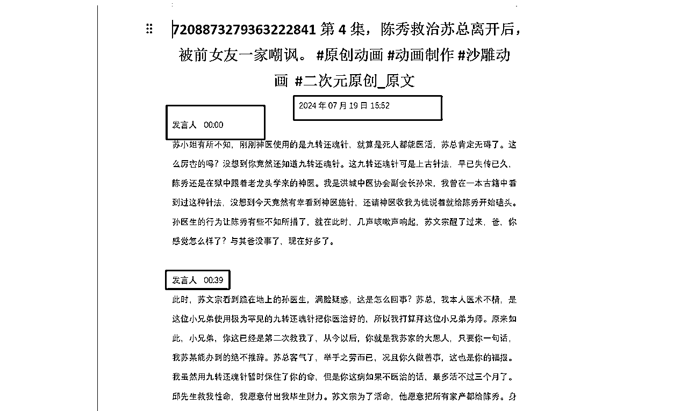
那其实这个通义还有其他一些很强大的功能，你们下来都可以自己多去试试。全部都是免费的。
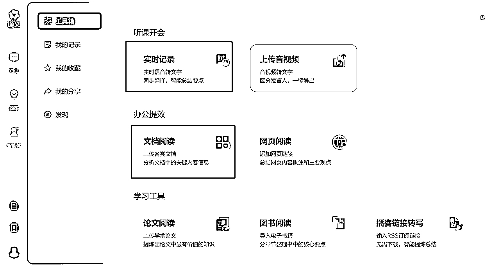
比如实时记录，开会的时候，你就把它开着，可以录6个小时，然后自动就给你转文本了，还可以分单人，2人，多人，还能给你总结全文纲要。下来多去试试。
到这儿昂，你们已经就掌握了，如何批量提取视频，以及批量提取文案了。
有的做小红书治愈类账号的同学，需要提取同行的音频。
那其实就可以提取了视频之后，去到【格式工厂】。将视频批量转音频就好了。电脑软件，去观望下载就好了。
节省出来的其他时间，我们大可以好好去享受生活，陪伴家人。
如果大家有什么其他好的工具，也欢迎和我分享，我很乐意交流，共同进步！
https://wwi.lanzoup.com/iFfKn1w9wbqh
https://tongyi.aliyun.com/qianwen/
http://pcgeshi.com/screen.html
对咯，有下载视频号需求的朋友，可以找我对接资源。稳定靠谱。10元买断。一次购买，终身可用。视频清晰。
我是源源，来自成都，致力于用AI，更高效的生活。